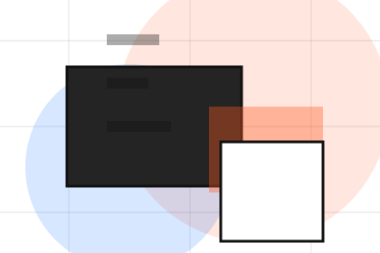
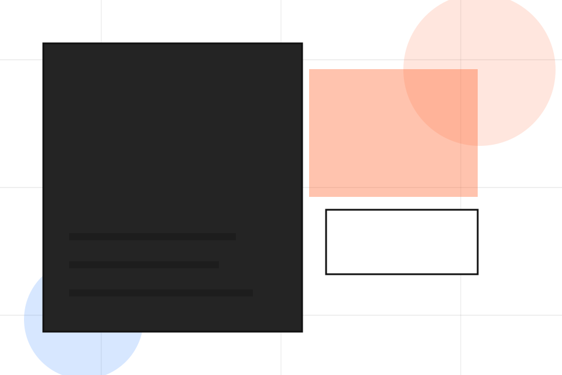
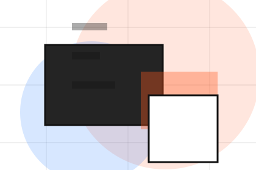
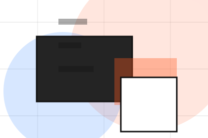
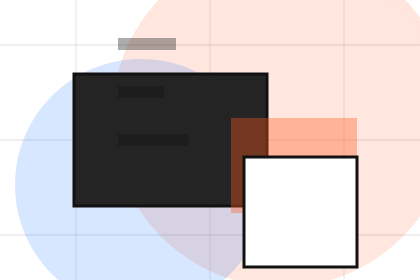
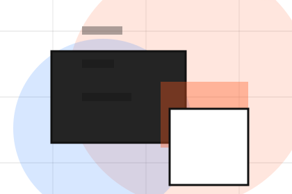
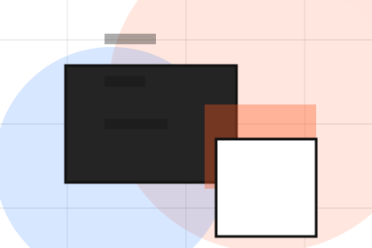
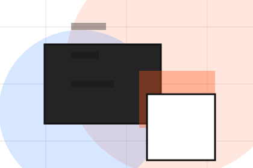
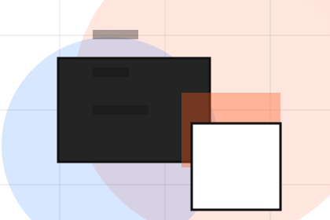
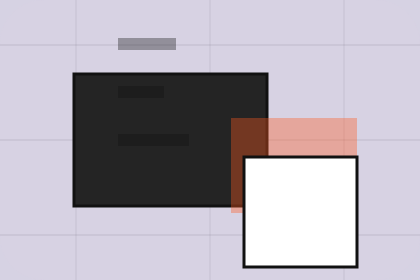

GuideVector reports guide
A useful entry point for visitors who need more context before they send a brief.
Open resourceInsights / 01
Insights opens as a clear consulting decision hub: what Vector offers, who it helps, why it matters, and which route to take first.
The first screen combines positioning, proof, primary action, and fast internal navigation, so people can act immediately or compare the rest of the insights route with context.
Idea-led editorial hero
Select the closest route and Vector keeps the next step, proof, and follow-up expectation aligned with clarity, leverage and measurable progress.

Insights / 02
Frameworks gives researching visitors a practical route into guides, checklists, and comparison material without leaving the site structure.
Each resource behaves like a useful internal link, giving cold and warm visitors a way to learn, compare, and return to the action path.
Explore InsightsA useful entry point for visitors who need more context before they send a brief.
A scannable comparison aid that makes research usable before the next decision.
A route back to support, services, or contact when the visitor is ready to act.
Insights / 03
Reports gives researching visitors a practical route into guides, checklists, and comparison material without leaving the site structure.
Each resource behaves like a useful internal link, giving cold and warm visitors a way to learn, compare, and return to the action path.
Explore InsightsVector structures reports around guide, checklist, and a clear next route so visitors can compare the block quickly before they send a brief.
Send Brief
GuideA useful entry point for visitors who need more context before they send a brief.
Open resource
ChecklistA scannable comparison aid that makes research usable before the next decision.
Open resource
BriefA route back to support, services, or contact when the visitor is ready to act.
Open resourceInsights / 05
Analysis gives researching visitors a practical route into guides, checklists, and comparison material without leaving the site structure.
Each resource behaves like a useful internal link, giving cold and warm visitors a way to learn, compare, and return to the action path.
Explore InsightsA useful entry point for visitors who need more context before they send a brief.
A scannable comparison aid that makes research usable before the next decision.

A route back to support, services, or contact when the visitor is ready to act.
Insights / 06
Leadership gives researching visitors a practical route into guides, checklists, and comparison material without leaving the site structure.
Each resource behaves like a useful internal link, giving cold and warm visitors a way to learn, compare, and return to the action path.
Explore InsightsA useful entry point for visitors who need more context before they send a brief.
A scannable comparison aid that makes research usable before the next decision.
A route back to support, services, or contact when the visitor is ready to act.
Insights / 07
Growth gives researching visitors a practical route into guides, checklists, and comparison material without leaving the site structure.
Each resource behaves like a useful internal link, giving cold and warm visitors a way to learn, compare, and return to the action path.
Explore InsightsA useful entry point for visitors who need more context before they send a brief.
A scannable comparison aid that makes research usable before the next decision.
A route back to support, services, or contact when the visitor is ready to act.
Insights / 08
Downloads gives researching visitors a practical route into guides, checklists, and comparison material without leaving the site structure.
Each resource behaves like a useful internal link, giving cold and warm visitors a way to learn, compare, and return to the action path.
View ResourcesVector structures downloads around guide, checklist, and a clear next route so visitors can compare the block quickly before they send a brief.
Send Brief
GuideA useful entry point for visitors who need more context before they send a brief.
Open resource
ChecklistA scannable comparison aid that makes research usable before the next decision.
Open resource
BriefA route back to support, services, or contact when the visitor is ready to act.
Open resourceInsights / 09
Articles gives researching visitors a practical route into guides, checklists, and comparison material without leaving the site structure.
Each resource behaves like a useful internal link, giving cold and warm visitors a way to learn, compare, and return to the action path.
View ResourcesA useful entry point for visitors who need more context before they send a brief.
A useful entry point for visitors who need more context before they send a brief.
Open resourceA scannable comparison aid that makes research usable before the next decision.
Open resource
BriefA route back to support, services, or contact when the visitor is ready to act.
Open resourceInsights / 10
Vector closes the insights route with a clear action, a quick reminder of the value, and a low-friction way to send a brief.
Visitors who are ready can use the primary action. Visitors who are still comparing can scan the section links, proof, and support routes before they send a brief.
Send BriefThe final block keeps the choice simple: act now, compare one more proof route, or send enough detail for a focused response.
Send Briefclarity, leverage and measurable progress
A strategy studio site with large editorial type, idea-led modules, mosaic proof, and workshop conversion. Insights ends with a direct path to send a brief, plus enough context for visitors who still need to compare.

Send BriefInformation is provided for planning and should be reviewed for the final client, location, and operating rules.